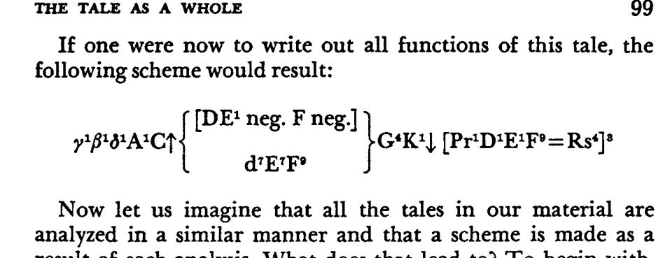
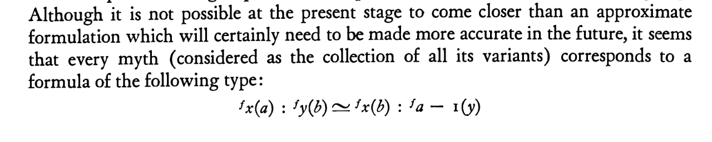

Outline
Tristero
“A Real Alternative to Exitlessness”
This realization of the poetry of London is not a small thing. A city is, properly speaking, more poetic even than a countryside, for while Nature is a chaos of unconscious forces, a city is a chaos of conscious ones. The crest of the flower or the pattern of the lichen may or may not be significant symbols. But there is no stone in the street and no brick in the wall that is not actually a deliberate symbol—a message from some man, as much as if it were a telegram or a post-card. The narrowest street possesses, in every crook and twist of its intention, the soul of the man who built it, perhaps long in his grave. Every brick has as human a hieroglyph as if it were a graven brick of Babylon; every late on the roof is as educational a document as if it were a slate covered with addition and subtraction sums. (G. K. Chesterton)
\[ \frac{\pi}{4} = 1 - \frac{1}{3} + \frac{1}{5} - \frac{1}{7} + \frac{1}{9} - \cdots = \sum_{n=0}^{\infty} \frac{(-1)^n}{2n+1} \]
\[ \frac{\pi}{2} = \int_{-1}^{1} \sqrt{1-x^2} \,dx \]
In the Symbol proper, what we can call a Symbol, there is ever, more or less distinctly and directly, some embodiment and revelation of the Infinite; the Infinite is made to blend itself with the Finite, to stand visible, and as it were, attainable there. (Carlyle, Sartor Resartus, 1834)

